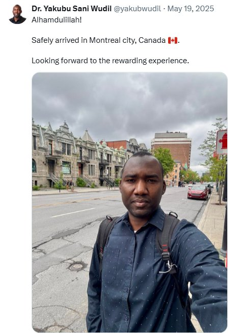

While you're still watching YouTube videos and getting quoted ₦400,000 by consultants, other Nigerian doctors are landing in Canada with work permits, earning ₦185 million a year, and building the life you keep planning.
The honest answer, for most Nigerian doctors, is not lack of desire. It is lack of a clear, specific, trustworthy map. You don't know which of the 5 pathways fits your exact situation. You don't know what your reference letter must say. You don't know your CRS score or how to improve it. You don't know the real total cost. And every consultant you speak to quotes you ₦300,000–500,000 just to start telling you.
The Doctor's Bible is that map. Written for Nigerian doctors specifically. Built from the ground up for your reality — MDCN, naira costs, Lagos and Abuja Prometric centres, and all 5 pathways most guides don't even know exist.
The question is never whether it's possible. Hundreds of Nigerian doctors are licensed and practicing in Canada today. The question is only what's holding you back.

| Specialty | Gross (CAD/yr) | Take-home (CAD) | In naira/year |
|---|---|---|---|
| Family Physician | CAD 280,000 | CAD 185,000–200,000 | ~₦185–200 million |
| Internist / Paediatrician | CAD 360,000 | CAD 240,000–250,000 | ~₦240–250 million |
| General Surgeon | CAD 450,000 | CAD 295,000–310,000 | ~₦295–310 million |
| Anesthesiologist / Radiologist | CAD 500,000+ | CAD 320,000–340,000 | ~₦320–340 million |
After malpractice insurance, provincial taxes, and overhead. 40–50 hour weeks. Actual weekends off. Equipment that works.
This is not a summary document. Not a checklist of things to Google later. Each chapter gives you the exact detail that consultants charge ₦500,000 to provide verbally — in writing, with templates, with step-by-step instructions.
This is not a comparison to an inflated "original price." This is a comparison to what Nigerian doctors actually pay consultants for exactly this information — today, in 2026.
One NOC reference letter template from a consultant costs more than this entire guide. If your reference letter is currently wrong — and most Nigerian doctors' letters are — that mistake costs you months of delay and potentially ₦1.4 million in a failed MCCQE application cycle.
| What you need | Consultant price | Doctor's Bible |
|---|---|---|
| Immigration pathway advice | ₦150,000–500,000 | Included |
| NOC reference letter templates (all 3) | ₦90,000–240,000 | Included |
| CRS score strategy | ₦50,000+ | Included |
| Province selection | ₦40,000+ | Included |
| MCCQE 16-week study plan | ₦60,000+ | Included |
| Post-landing checklist | Not offered | Included |
| Total cost | ₦390,000–850,000+ | ₦8,500 |
"I paid a consultant ₦350,000 last year and got less useful information than what's in this guide. I didn't even know my reference letter was wrong until Chapter 8 showed me exactly what IRCC needs to see for NOC 31102. My CMD had listed my duties correctly but was missing the phrase about 'preventative care and referrals.' That one sentence was why my application was stalling."
"My wife and I had been fixed on Toronto for two years. The province comparison table in Chapter 5 showed us something no one had ever told us: Ontario licensing takes 24–36 months for IMGs. Nova Scotia takes 12–18. Same salary range, completely different timeline. We applied to Nova Scotia the week we finished reading."
"Every consultant I spoke to, every YouTube channel, every Facebook group — they all only talked about Express Entry and PNP. Chapter 2 of this guide introduced me to the Rural Community Immigration Pilot and the Francophone pathway. The RCIP fits my situation far better than Express Entry and has almost no competition from other applicants. I had no idea it existed."
In 1970, one Nigerian doctor moved to Canada with no guide and no pathways. In 2026, Canada has built 5 pathways, cut the physician draw to CRS 169, and reserved 5,000 PR spaces specifically for doctors. The doctors who act on this today are the ones their colleagues will ask about in 3 years.
Secure payment via Selar · Instant .docx download · 7-day refund guarantee · Africa Health Initiative · March 2026